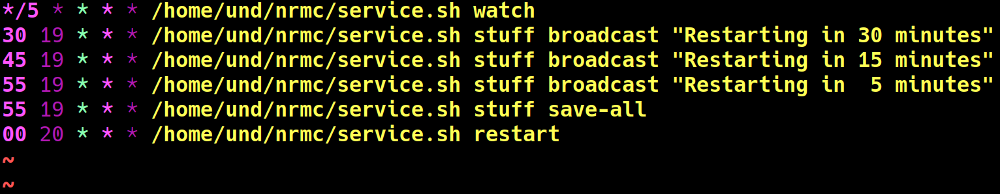

Automating things without systemd
Making things run in the background without root access
This year I ran into the problem of needing to daemonize a
process without using systemd (--user services won’t work
due to an SSH session considered a fake session) and without
elevated permissions (I do not own the VPS in discussion, and
as a matter of fact multiple people host things on it, so not
letting people run sudo left and right is a valid decision).
The obvious choice in that situation is to write a wrapper script
which would ensure a process (or a screen session) with specified
name is indeed present, and if it isn’t, start it. Automating things
is easily done through crontab, while daemonizing is best done
by using GNU screen or by backgrounding things via nohup.
Simple daemon using nohup
This is pretty much a real world example. I run an awesome SOCKS5
proxy server (which helps a ton in the environment of Internet
censorship and people blocking Russian IPs for existing) called
microsocks. Its commandline
format is simple and the whole program itself is quite unpretentious,
so using a generic wrapper script which uses nohup is sufficient:
#!/bin/sh
cmds=$(ps -o cmd)
if echo $cmds | grep -wq microsocks; then exit 0; fi
nohup ~/.bin/microsocks -p $MICROSOCKS_PORT >/dev/null 2>&1 &
exit 0
A peculiar thing with this approach is the need to strictly match
process names since the script lists all the user processes, and
microsocksd is one of them, so when the -w key to grep is
omitted, the check succeeds and the script doesn’t do anything!
A cron job is then added to run the wrapper script at a set fixed time interval. Five minutes (up to 580 PIDs per day) seems like a good interval considering the fact that the VPS hoster sets PID limits, which eventually grind the VPS to a halt when PID values exceed 40000:
*/5 * * * * /home/und/.bin/microsocksd
A more complicated daemon using screen
Again an another real world example. On the same VPS, I run a Minecraft™
server and other VPS users run their servers from time to time. The
server is much more pretentious than a mere SOCKS5 server and also
accepts console commands from stdin. In that case, GNU screen with
its ability to stuff strings of text into the standard input seems
like the best choice.
The wrapper script is designed to somewhat resemble your regular
rc.d service script, including start, stop and restart tasks.
Other tasks include watch to do the very thing a wrapper script is
supposed to do, and stuff to send a string of text into the server console.
The script itself
is complicated, so here’s the crontab entry for the SMP:

And, as evident by the screenshots, the approach works: